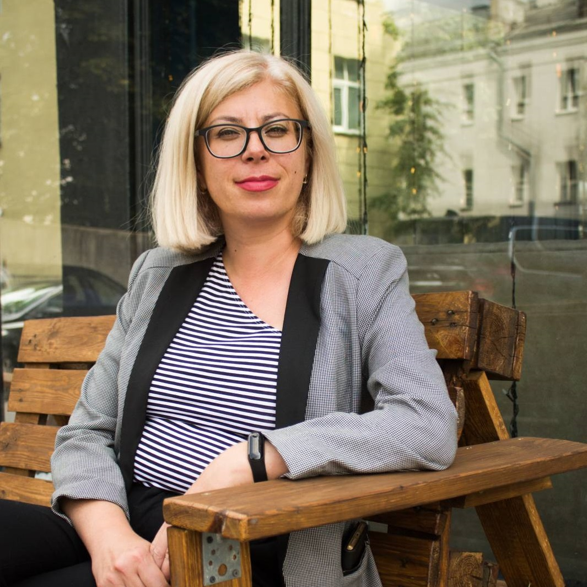

Инна Малаш
Обо мне.
Меня зовут Инна Малаш, родилась, живу и работаю в г. Минске. Моё жизненное кредо можно выразить цитатой Г. Фигдора: «Отсутствие проблем и конфликтов ещё ничего не говорит о благополучии того или иного человека или коллектива. Умение их разрешать – с наименьшими потерями для всех участников – вот истинный показатель душевного здоровья».
Я психолог с 2000 года. Закончила БГПУ им. М. Танка. Это моё второе образование, первое - техническое. Мое профессиональное становление как психолога после университета началось с обучения гештальт-терапии. Я сертифицированный гештальт-терапевт, со специализациями по детской, семейной, групповой терапии и работе с психологической травмой. Работая с детьми невозможно не заниматься арт-терапией: изо-терапией, куклотерапией, тестопластикой и др. После я поняла, что арт-терапия работает и с детьми, и со взрослыми! В 2012 году стала нтересоваться онкопсихологией. Прошла обучение в Питере и Москве, была на стажировках и обмене опытом по работе с онкопациентами в Литве, Латвии и США. В соавторстве с Юлией Чепик родился курс по онкопсихологии «Онкопациент, семья, социум». С 2013 года постоянно веду группы поддержки для онкопациентов, участвую в различных конференциях в Беларуси и за рубежом по теме онкопсихологии. Мой интерес к психотерапии постоянно манит меня на разные обучающие программы. Так я закончила базовый курс по КПТ (когнитивно поведенческой психотерапии) и продолжаю совершенствовать свою практику как когнитивно-поведенческий терапевт.
То с чем я работаю:
- Сложности во взаимоотношениях с ребенком (детьми).
- Детские страхи, капризы, неврозы, агрессия, трудности адаптации.
- Сложности в поведении, обучении и развитии.
- Конфликты в семье.
- Обида
- Жизненные кризисы:
- Потеря близких, горе, развод, потеря/смена работы.
- Ощущение потери целей и смысла жизни.
- Психологическая травма
- Провожу индивидуальные консультации для лиц с онкологическим заболеванием в стадии лечения/рецидива/ремиссии и их родственников.
О личном.
Я замужем более 30 лет. У меня взрослый сын. Перенесла онкологическое заболевание. Люблю и ценю жизнь, со мной рядом люди, которые мне дороги и которым дорога я. Мне важно быть честной к себе и искренней с другими, быть чувствующей и сохранять способность удивляться и интересоваться новым опытом и людьми, выбирать и иметь возможность ошибаться равно как и принимать успех, понимать, что радует и уходить от того, что не нравится. Я могу быть сильной и слабой, открытой и изолированной, энергичной и спокойной, для меня это не плохо / не хорошо, - просто есть разные обстоятельства.